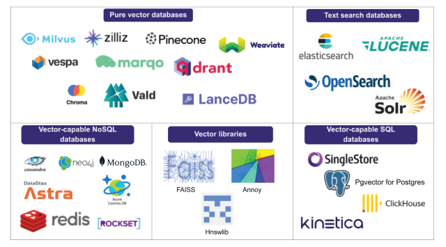
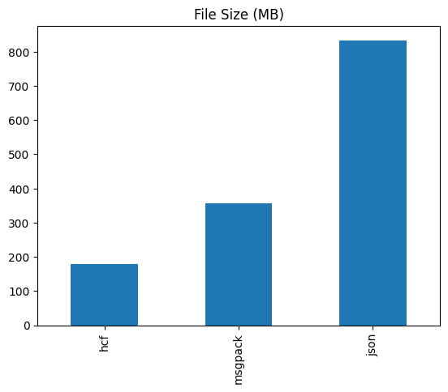
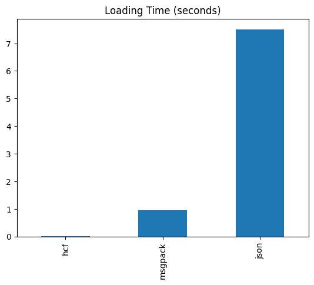

You (Probably) Don’t Need an Embedding Database
If you’ve been paying attention to the recent advances in Large Language Models (LLM), you’ve noticed that a whole new crop of startups emerged to provide search over embeddings.

Search over embeddings is a very different process than search over a database of documents. Embedding search uses a vector space representation of an image or document that has been created by a corresponding model, rather than an inverted index of terms and documents. Search in a vector space is typically handled with nearest neighbor search, which returns the embeddings of the closest records to the target record. This technique is much more intensive to calculate than a simple inverted index lookup, and accordingly databases need to make trade offs for precision/recall in order to provide reasonable performance over large sets of data.
Embedding Databases for Smaller Datasets
Here at Hushh we were suprised to realize that there wasn’t a good option for smaller/portable embeddings for databases. Many modeling tasks rely on smaller and more domain-specific datasets to perform domain-specific tasks. For instance, image recognition models might need to index the products of a given storefront. There may be many thousand products, but often not the millions of products that would necessitate a standalone database. Furthermore, a standalone database would need to be running at all times, incurring a large one-time cost for any sort of embedding search functionality.
If one doesn’t have a lot of data, and doesn’t want to pay the maintenance fee on hosted embedding search, using an embedding search database is costly overkill, but what are the options?
Many embedding databases and models use python, so accordingly, the embeddings can be exported in the python pickle format. However, the pickle format is unsafe, making it a risky bet for production systems.
JSON formats can also be used for pickling data, but JSON requires all of the embedding data to be decoded and loaded into memory. This process can take a significant amount of time, making it costly to load/unload embedding datasets on the fly.
Messagepack is another solid option, optimized for speed and portability. Originally, this was the format that we were likely to use. However, in the back of our minds we wondered, can we make it even faster?
Introducing The Hushh Catalog Format
We introduce the Hushh Catalog Format (HCF), a file format that is optimized for speedy (and lazy) loading of embeddings from disk.
To understand the performance benefits of the HCF format, we’ll use this fashion dataset comprising ~44K product images, representative of the fashion offerings of a mid-to-large size department store.
We’ll also take figures and data from this data science notebook that contains the result of the analysis.
Comparisons
For the purposes of comparison, we’ll generate embedding vectors in three different formats:
- JSON : A popular option for web development due to it being human-readable
- Msgpack : A schema-less binary format that is a good option for smaller/faster serialization
- Hushh Catalog Format : A format with a schema designed especially for storing product information and metadata.
File Size

File sizes for smaller/embedded databases can add a lot of overhead for search. In our first comparison we look at the file size from our example dataset and see that HCF is half the size of messagepack, and a less than 25% the size of a comparable json format.
File size matters a lot for databases, particularly since files like messagepack and json need to be loaded fully into memory. If you have a bigger file format, your program will use more memory to store it internally, which adds overhead for resource usage and time.

Interestingly enough, the file size difference becomes even more pronounced when the loading time is compared. The HCF format is a whopping 20,000 times faster at loading the embedding data than JSON, and also beats msgpack by over an order of magnitude.
How is this possible?
The answer is that the Hushh Catalog Format reader doesn’t read in the data all at once. Instead, it streams it in as necessary directly from disk without needing to parse the entire file. This technique of lazy loading enables the Hushh Catalog Format to all but eliminate a startup delay when loading embedding data.
What was used to build the Hushh Catalog Format?
The Hushh Catalog Format is built on top of flatbuffers. Flatbuffers is similar to protobuffers, except it’s designed for larger amounts of data that can be streamed lazily. Flatbuffers excel at loading densely packed numeric and textual data in a structured format. The structured format requires a schema, and here’s the current schema for Hushh Catalog Format
Using the schema, we can use flatbuffers to generate python runtime classes that stream the file into memory, along with some helper constructor methods. There’s runtime classes for Swift available as well, with more to come.
What can you do with the Hushh Catalog Format?
For now, the format is geared towards providing catalog search services. Accordingly, information pertaining to products are supported. As we expand the scope of the format, we will enable more fine-tuned schemas for a growing number of open source personal data formats.

We’re using the HCF format as a way of providing portable embedding indexes that are available from the phone or from a web server. Our Vibe search service will use it under the hood, making state of the art embedding search more easily available to everyone!